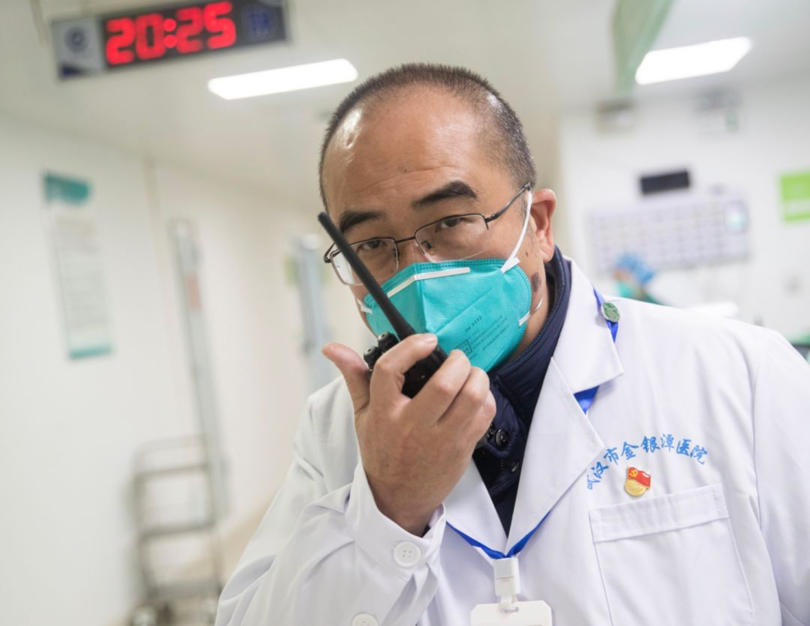

口述实录：再活一次，我要活得更好 | 武汉武汉
原文链接 备份链接 我是记者郭静。 郝丹是我的同行，但此前并不认识。知道他，是因为他上了《焦点访谈》。采访他那天，他心情本来并不好。因为上了《焦点访谈》，有部分小区居民公开排斥他，其实他早已痊愈出院，居家隔离也已超过14天，而且，他出院第 …

我是记者郭静。
如果说武汉是这场疫情的中心，那么中心的中心，就是金银潭医院。作为武汉市传染病专科医院，这里是最早打响这场全民抗“疫”之战的地方。在与死神较量的正面搏击中，身为一院之长的张定宇，他拖着身患“渐冻症”的病体，还要默默承受妻子也感染新冠肺炎的巨大打击。来武汉这么多天，我一直在想，一定要采访张定宇。但可以想见，这段日子他有多忙、多累。
采访约在了疫情稍微平稳一些的时候。原定的采访本是前一天，距离采访前一小时，他突然出现了房颤，我听后非常担心，他真的是太累了。没想到，他把采访又约在了第二天下午，而且一谈，就谈了两个多小时。
他记忆力超好。他对事件的还原，足以记入这段历史。
1
12月27号，同济医院说要转来一个病人
我叫张定宇，今年56岁，我是武汉市金银潭医院的院长。
我是2014年1月2号来的金银潭医院，在这工作已经超过6年了，我想，剩下的时间我也会在这里待下去。
我们医院以前有三个名字：武汉市医疗救治中心、武汉市传染病医院，还有武汉市金银潭医院。后来把第一个名字给去掉了，武汉市金银潭医院、武汉市传染病医院，这两个名字保留使用。
说起这次疫情，最初大约是2020年1月3号前后，媒体对武汉的关注度就比较高了。但其实更早一点，2019年12月27号晚上6点半左右，我还记得，那个时候武汉天黑得很早。那天，我，还有黄朝林院长，都在办公室。黄院长接到同济医院一位教授打来的电话，说要向金银潭转诊一个病人。我们问是什么病？对方说是冠状病毒感染的一个病人，没说肺炎。
这是什么病？我当时并不了解，包括我们医院这些人当中也没有谁接触过冠状病毒是怎么回事。于是我们马上就打电话给北京地坛医院的专家，问“这个病人我们应不应该收？能不能收？”地坛医院的专家马上就回复说，“你们应该收，金银潭是传染病医院，这个病人你们要关注。”于是我们马上就又打电话给同济医院，让他们把病人转过来。
但是，这个病人本来是从武汉市二医院（武汉市中心医院）转诊到同济的，让他再转到我们这么一家机构，他不愿意。一边同济给病人做工作，同时我们也开始做准备，要了解冠状病毒是怎么回事。
作为医生，实际上心里是比较敏感的。我们想的是，首先得把病毒的基因序列拿到，所以打电话到第三方检测公司。实际上这个公司也是很谨慎，他们第一次给的报告上面并没有指出是“冠状病毒”，只说“RNA病毒未检测”，但他们在电话里和同济的大夫说了。我们就告诉第三方公司，你既然做了测序，这个序列必须给我们，因为这个病人到时候要转诊到我们金银潭来。
这样，我们把基因序列拿了过来，找到中科院武汉病毒研究所，当天晚上病毒所就比对出来了。当时是27号晚上大概10点多。比对出来最像什么？叫做“蝙蝠来源的SARS样冠状病毒”，吻合度非常高。当时病毒所也是在电话里跟我们这样说了，没有出报告。
第二天28号，我们就追问同济病人转诊的事情，那边说病人家属不乐意，不愿意转。我们也就不能强迫。
29号是星期天。下午稍晚的时候，黄朝林副院长打电话报告我，说要带一个医生去新华医院（湖北省中西医结合医院）会诊，讨论的是群体性感染的7个病人。他去的时候省疾控中心的专家也在，讨论的结果就是：往金银潭转诊。
根据之前了解到的信息，我们已经有了警惕性。所以29号去新华医院转诊的时候就已经全套防护了。但在心理上还觉得，这是一个孤立事件。当时马上就元旦了，春节也快到了，我们希望赶快把它解决掉，干完就完了。
就跟2017年的禽流感一样，当年禽流感也是在这个季节，大概到3月份就结束了。那次禽流感全省总共二十来个病人，绝大部分都转诊到金银潭来了。所以当时我也是这种心态：集中精力把这几个转诊来的病人救治好。
但是，前面说是7个病人，实际上后来转诊来了9个病人。为什么是9个？有两个一起来的家属说自己也有症状，不肯走，也要住院。所以第一次是9个病人，当天晚上就住院了。
2
12月30号，做了最正确的一件事情
12月30号是周一。上午科室医生在病房里讨论完病人情况，我也去问了一下。他们告诉我，病人都做过了咽拭子检测，但检测出来结果全部是阴性。当时也有一个试剂盒，里面可以检测到32种病毒，涵盖了SARS冠状病毒。
别人基因测序说有，我们为什么没检测到呢？没检测到，那就有问题嘛。我就跟黄朝林副院长说：“不行，我们得把所有的病人做肺泡灌洗，先进行支气管内镜检查，之后再做肺泡灌洗。”
下午2点钟，内镜科主任带着护士进去了，大家也是防护得非常好，用上了正压头套。
这是个有创的检查，转来的9个病人里有两个人拒绝签知情同意。
到下午4点，7个人的肺泡灌洗全部做完以后，我们把样本分成四份，一份交给武汉市疾控中心，一份交给中科院武汉病毒所，另外我们自己留两份，考虑到以后可能会用得着。
大概4点多钟的时候，样本已经全部准备好了。武汉市卫健委的一位分管领导带着疾控中心的人也到了金银潭，这时候疾控中心的人告诉我，他们做过了32种病毒群检测，这32种病原体什么也没有。
我告诉疾控中心，我们的7份样本全部在这了，请疾控中心尽快把它检测出来。
同样我们和病毒所也说了。很快，他们连夜就做了检测，两个和SARS冠状病毒相关，测出来是阳性。因为它和SARS冠状病毒同源性很高，所以会呈阳性反应。这就更加让我相信，肺泡灌洗这个措施应该来说非常及时。
我的一个判断是，病人是下呼吸道先感染，直接感染到肺泡，逐渐发展到把肺泡占满了，然后从肺泡漫出来，之后咽拭子才能够检测得到。这是我自己的观点。
到31号下午的时候，国家队的专家还有省内的一些专家就过来了，坐满了我们的大会议室。当时已经不是9个病人了，30号接着在收病人，31号也在收病人，大概已经有20多个病人了。大家把所有病人全部过了一遍。说完以后得出结论：首先，这些病人画像画完都是一个样子，所以肯定是同一种病；第二个结论：他们说这可能是病毒感染，不是其他感染。
当天晚上，就开了一个跨年的工作会议。到1月1号凌晨两三点钟的时候，武汉市领导决定：关闭华南海鲜市场。
我现在并不知道国家卫健委为什么派专家来，可能是30号晚上我们这两个阳性结果已经报到国家去了，也可能是网络上的舆情引起了国家CDC的警惕。
但现在回想起来，我觉得给病人做肺泡灌洗是早期我们做得最对的一件事情。我做医生、做医院的管理者，至少这个关口我没松掉。万一松掉了，那我就是罪人。所以，我们这家医院具备这个能力，你就必须把这些做掉。核心就是你要守土有责，每一件事情都要守土有责。
第三方检测公司当然也是可信赖的公司，但是你作为一家医疗机构请到了CDC和病毒所来检测，得出这个结论印证第三方公司的检测结果，这个证据链就是很强的。
3
元旦过后，金银潭成了风暴之眼
接下来病人逐渐开始增多，1月2号、3号不停地有病人来。
境外的媒体也在关注。有同事发图片说CNN、《华尔街日报》《纽约时报》都报道了，并且把我们医院的照片作为背景放在报道里。
媒体的关注也让我提高了警觉。那个时候我就跟大家说，我们现在是在“风暴之眼”，是世界媒体关注的地方。当时我本人也感觉到，这个事情还可能会比较重大。一个是病人增加的速度比较快，到了2号、3号的时候，已经有四、五十个人。病人越来越多，政府关注也越来越高，每天都有汇报、报告。也有很多专家过来，包括疾控方面的专家、病毒所的专家，还有医疗的专家，比如李兴旺教授和曹彬教授，大家聚在一起讨论，希望可以集中力量打个歼灭战。
三十、五十，然后八十、九十、一百……病人逐渐就涨到这个数字了。当时就听到专家们说，外面哪个医院哪个医院现在也有很多病人。实际上当时我们在医院里消息还是很闭塞的，因为大量的精力都投入到了医疗救治，忙不过来，不知道外面发生了什么事情。在医院里面清楚的是什么？是我这里病人很多，病人很重，我们要不停地准备，把病人接纳下来，让病人能够得到安置。
可能每次我们的动作都比事件发展稍微快了半拍，一拍都没有，只能快半拍。怎么快半拍的？病人突然要增加的时候，我们已经清空了一个楼层，准备接病人来了。楼层不是清完了就可以住病人的，清完了以后还要做彻底的消杀，地面、物表、墙面、空气，统统要做消杀。消杀完以后，要把所有的单元，床、床头柜、凳子等等准备好。
反正先准备吧！因为已经感觉到外面病人在增加。当你准备好了以后，“哗”一下！这个楼面又满了。还没住满的时候我们就又马上准备下一个楼面，一个楼面一个楼面地展开。
刚开始的时候不是开的ICU，是普通的隔离病房。包括我们6楼、5楼、4楼，当时都是普通隔离病房。后来大概是十几号以后，重症病人增加得非常快，而且省卫健委组织了同济、协和、省人民医院的 ICU团队来支援我们，要求他们一人对应一个楼层的ICU病房。这个时候，我们就把南6楼、南5楼改造成了ICU病房。
大概也就是1月3号到5号的时候，我们就开始紧急采购呼吸机、监护仪、输液泵、体外的除颤设备还有心肺复苏设备等等。每个楼面大致按照25台呼吸机、25个输液泵这样来准备。其实准备好以后也还是有点顾虑：是不是开口开太大了？准备这么多，万一没用呢？万一买多了平时又用不了，这50台呼吸机怎么办呢？
实际上到了十几号以后，所有的呼吸机都用上去了，该上ECMO的也上了。
当时倒也没有感觉是在作战，只觉得事情很紧迫。当时我也跟我们的同事反复强调：要保卫我们这个城市，保卫武汉的人民，我们不希望把武汉人民困在这里，如果我们很快地把疫情控制住，大家春节该干啥干啥。
因为思想动员做得比较充分，所以每个楼面开展起来还是比较顺利。我们医生护士没有一个人抵触，有时经常是晚上突然通知他们楼面要清空，要转运其他的病人，他们就得把在院的病人转到另一个楼面，然后把楼层清空做消杀做处理，第二天早晨再收其他的病人。这套流程我们做了很多次，虽然很忙，但还是比较有序。
当时病人每天逐渐在增加，我们整个三幢楼，南楼、北楼包括综合楼已经全部清空了。当时我们还有一个GCP（药物临床试验）病房，它占了一层楼。本来我们过完年后还有临床试验要进行的，到了腊月二十七的时候我已经下决心要关闭了。GCP是我最后关的一块，目的就是让我们的同事全身心地投入医疗工作。
所以为什么我说每次都要快半拍，是因为我自己首先心理上做好了准备，我们同事也做好了心理准备，而不是等到局势逼我，要我们做这个决断。
封城是几号我不知道，说实在的没有太多的印象。只是觉得每天都很紧张，每天都有大量病人要收进来，每天有那么多重症病人要抢救，要气管插管，有的病人要上膜肺，还有一些病人在死亡……
因为不停地有病人进来，就必须有病人出去才行。有的病人一待二十多天，怎么得了？那医院就堵成“堰塞湖”了。当时的出院标准一是持续10天不发烧；二是症状消失，症状改善；第三是肺部的影像吸收，因为当时没有别的检测方法。1月1号到1月31号，我们将近有三百多个病人出院。
这样，医生临床的工作量就会非常大。我们整体的医务人员有限，而且他们又是在穿防护服的状态下来做这些工作，所以做起来就非常吃力。到了春节前夕，确实有点吃不消了。
当时也已经有媒体过来了，我们也没太关注，完全没有心思跟媒体打招呼。一直到大年三十的时候，有人说央视春晚上面有你们医院的镜头，我当时也觉得很意外。
4
1月9号之前，已经把病人的餐饮全部承担起来
最早我们病人是收费的，两千、三千，有些抢救的病人交一万、两万都有。媒体在报道中提到治疗费用后，政府很快给了指示：不要病人交那么多钱，交个门槛费就行了。
所以大概是1月5号的时候，我们就只收医保的起付线。
大约9号之前，我们就已经就把病人的餐饮全部承担起来了。为什么呢？因为3号、4号我去病房查房的时候，看到了很多病人自己定的盒饭，中午吃的晚上吃的，都没收拾完，堆积了很多。因为是他自己掏钱买的，我们也不好处理，他说他还要吃你怎么办？发现了这个现象，我就下决心了，每天吃饭的费用暂时不要由病人付，我们先承担下来再说。
当时给病人的餐饮是按一天90块钱准备的。到了1月9号的时候，市委市政府明确说了，病人费用一分钱不要收，已经收费的统统退还。既然政府已经说到这个份上，我还是比较敏感的，那就病人和医务人员应当同一个餐标，统统按120块钱准备。
这时候病人饮食也得到改善了。虽然知道盒饭难吃，但病人也会体谅我们：这份餐食是由医院代表政府提供给大家的，而且标准又和医务人员一样，他们吃什么我们吃什么，这样做下来以后，整个病房气氛就比较平静，不会再为吃饭的事情发生争执。
春节前我们还启动了一项工作，就是克立芝的药物临床试验。
最早也就是1月5、6号的时候，中日友好医院的曹彬教授跟我们提到了克立芝，他把文献给我们看，说在2003年SARS末期的时候，香港的袁国勇院士用这个药治疗了一部分SARS病人，通过和历史数据对比，可以看得这个药能够抑制SARS冠状病毒。
既然有证据，而且这两个病毒又比较靠近，我们为什么不用？而且我们有一个先天的优势，因为克立芝是抗艾滋药，我们医院是管艾滋病的，全省的艾滋病药全部在我们这。
当时想着一个病人按14天来算，大概是需要56颗药，一瓶药120粒，可以给两个病人吃。按照这个算法我们大概有1000人份的药。所以我们很快在临床展开了，鼓励一些科室主任，如果有重病人的话，赶快给这个药，说不定有用。
用了大概五、六天的时候，有个主任打电话给我，很兴奋，他说，“张院长，那个药好像真的有效！”
我说怎么有效呢？他说他把吃了药的几个病人的片子拿起来对比了一下，好像确实肺的吸收要快一些，病人的病灶区全部在往吸收方面好转，这给了我一个很强的信念。
再往后，我们就严格按照临床试验开展了。2月2号，整个临床试验入组完成。现在来看，临床试验效果是好的，不能说是特效药，但是是有效药。 “我们既要在疫情这块要打胜仗，科研这块也要打胜仗。”这两块现在已经显现出来了。
曹彬教授作为第一批来的医疗专家，他为前期的病情诊断和病人救治做了很多很多事情。印象最深的还是，他每次看病人不仅仅是听汇报，他要穿上防护服到病人跟前去一个病人一个病人地看，看完了以后他会给一些医嘱，或者基本的判断，比如呼吸机该怎么调整等等。
有一次我跟他进病房，当时有个女病人，也就三十五六岁吧，情绪非常不稳定。她一直在ICU里面哭，吵着说我要回家。其实她当时已经缺氧很厉害了，用的高流量给氧装置，但还是在不停的哭闹。曹教授来了以后，我就跟她介绍说，这是北京来的中日友好医院的曹彬教授，他是国家医疗队的专家，特意来看你。曹彬教授非常体贴地跟病人沟通，告诉她现在得安安心心在这治疗，有这么多人在关注她、帮助她，首先要做的事情是把病要治好，病人逐渐也就安静下来了。
5
春节前，卫生员和保安突然辞职了
前面说到元旦前我们开了一个连夜的跨年会议，我和我们院王先广书记是凌晨三点多会议结束后回到医院的，当时想在对面的酒店找个床睡一下，但是没床，王书记只好睡在躺椅上，我睡隔壁一个沙发，睡了几个小时。早上六七点钟，我们就让院办通知所有职能部门以及科主任、护士长全部到岗。当时觉得也就是要取消一个元旦假期，后面可能还有一个周末，并没有觉得全部假期要砍掉，后来是一个一个取消的。再往后一点，就没有考虑过春节休假了。
所有护士的正常休息也取消了，甚至下夜班的休息都不能保证他们了，这是最痛苦的时候。因为我们的人手已经到了极限，每个病区的人手根本就拉不开。我们一个病区也就是十五六个护士，而管理的病人是三四十个。穿防护服进去一干就是4个小时，4个小时换一下，再进去干4个小时，每天8个小时在里面。
大概是1月12号到15号之间，有一天突然走了50多个卫生员。他们看到病人来得那么多，医护人员防护这么紧密，很害怕。虽然我们对卫生员也是要求全部做三级防护，就像对自己的员工一样，因为他们污染了也会污染我们的同事嘛，但有些人还是很害怕。我们总共一百多个卫生员，走了一半。还有当时临时聘用的18个保安，有一天突然全部不来了。
唉呦，可把我们搞惨了！
我们所有的行政后勤干部职工都要上病房去，送餐。你不会看病人，但是送个餐食应该是可以的，是吧？卫生员走了以后，我们的行政人员也要进去。所以卫生员的工作基本就是护士还有行政人员在承担。大家也没有什么怨言，还是把这事情做下来了。这也是当时碰到很棘手的状况，你平时觉得一个卫生员怎么会是个事情？在这个状况下就是个事情。
本来ICU护士还是配得比较充足，后来实在没办法了，临床其他科室护士不够，只能削减ICU的队伍去满足其他的队伍。因为普通楼面的病房里面也有很多重症病人，普通病房的工作状况可能不比 ICU要好。所以当时那些护士在里面的工作时间非常长，做得很苦。
到了大年三十，解放军的医疗队、上海的医疗队进来以后接管了我们四个楼层，极大地缓解我们的压力。你就觉得这个事情有希望了。而且你会感觉到我们不是一个人在战斗。后来解放军医疗队走了，福建的医疗队过来了，这也是特别能战斗的一支医疗队，他们管理的两个楼层收治病人和出院病人都非常多。他们在的两三个星期，收治病人是一百九十多，出院病人一百三十多。
当然从一开始我们也不是一个人在战斗，一直有湖北省和武汉市的医疗机构抽人在这里支援。
6
1月14号，我爱人也出现了症状
我爱人是1月14号前后开始有症状的。她以前是武汉市第四医院的护士，后来在医保办公室工作。他们医保办在门诊大厅有个服务台，她要在那儿回答病人的一些问题。
14号的时候她就有点发烧，在家有点低热。那段时间我偶尔还能回家，大概是18号晚上回家的时候，已经十一点多、十二点了。她给我准备了吃的，我就跟她说说工作上的事情，我说医院的病人很多都有气短、胸闷、喘气的症状。
她说，“我也有点喘气”，当时我实际上不太高兴，因为我每天工作忙得不得了，现在我说病人病情的时候，你跟我说你也喘气？你为什么先不跟我说？多多少少有点责备她吧。但心里又放心不下，我说明天一定去做一个CT扫描。结果第二天上午一扫CT，她的两个肺体就是很典型的改变。我说做完CT还不行，赶快再做个血常规，一查，很明显的淋巴细胞降低。
她19号上午做的这些检查，中午我就抽空回去一下，给她采个痰，同时给我自己也采一个，因为我还要工作，如果我感染了我也得隔离。采两份痰，两份肛拭子，送到医院来做检测，当天下午就得到结果：她的两个都是阳性，我两个都是阴性。没得说了，她得去住院，当时是住在四医院，她的工作单位。
我有压力，因为我知道这个病是怎么回事。她反而没有太大的压力，她说身边包括他们同事也有人在生病。
大概20号还是21号晚上，也是很晚了，我自己一个人开车回家，那时候我已经看到了很多死亡，而且不知道那些重症是怎么发生的，不知道怎么就朝着那个方向走了，我就感到很恐惧，开着车，眼泪就夺眶而出，很害怕，因为你不知道你的亲人会发展到什么程度。
幸运的是，她很快就转归，大概一两周就康复了。出院回家也是她自己回的，我没时间去接她。
实际上我几乎就没怎么照顾她，住院期间我就去过一次，陪她在床边坐了一会儿，聊会天，拉拉手，给她一些鼓励。
我一直觉得对她有愧疚，在她最艰难的时候没有照顾她。我们两个人感情比较好，她也说她对我有愧疚，在我工作最忙的时候没给我帮上忙。
后来，因为我可能在媒体上有一些影响，就跟她聊了一下血浆捐献的事。她说，正好他们有几个同学，包括一些同事也愿意参加血浆捐献。她是主动的，其实不应该说是我动员的。我说，“等我们采浆点准备好了，你就到我们这边来献浆算了。我在媒体上说过了，你也支持一下。”她说，“不是要支持你，我本身就应该做这件事。”我妻子还是蛮勇敢的。
一开始我的防护也做得不是特别好。幸运的是，可能我们院感控制做得比较好，办公区域一直都是清洁的，所以反而没出太多事情。
7
我们全院感染21个人，现在都出院了
总共我们全院感染是21个人，有8个是行政人员，另外大概有9个护士。8个行政人员有一个很明确是在华南海鲜市场感染的，完了以后又感染了我们另外三位同事。真正在病房里面感染的，就一个医生。另外有一个医生是在检验科，因为要给病人做血常规、生化常规，开盖的时候可能会有小的气溶胶“嘭”一下悬浮在外面，检验科的同志可能是这么感染的。另外一个就是我们黄院长，可能跟他经常在病房、在门诊，跟病人接触比较多有关系。
现在，我们所有的医务人员都出院了。恢复得都不错，有的已经来工作了。
而那些罹难的医生，无论是中心医院的、汉口医院的，还是武昌医院的刘智明院长，我们大家都是非常好的朋友，听到这个消息还是很伤心。他们是自己的同事、同行，感情上确实也受不了。我们每天都在救别人，你对自己的同行同事却完全手足无策，帮不了他们。你会觉得很沮丧，很沮丧。
灾难医学这一块，它是需要扩充的，我们要做好这种物质上的准备和思想上的准备。思想上有准备，事件来了，你就能够很正常地应对它，不会很慌乱，不是这个事情“哗”一下砸到你头上。你平时没有积累，这次我们肯定会垮掉。你个人很浮躁，就会带动你的团队也很浮躁。虽然我脾气很急，但实际上我是一个偏安静的人，我愿意一个人或者两三个人这样坐着聊聊天，说点事情。首先第一个是你要安静，他会给你蓄积这些能量；第二个，平时也要很敏锐，要观察事情，你知道外面发生什么事情。
这次的灾难，我想给我们国家、给我们医疗专业的同事包括卫生管理部门，也会提供一些其他的启示。
我们国家发展到今天，为什么医患矛盾这么尖锐？为什么现在（疫情期间）就没有这个矛盾？医生护士和大家一起共对灾难是一方面，那如果我们要收费呢？现在是国家很强大，把这个全部包住了。但是我自己的一个感受，如果以后我们的医疗能够保证那些最低端的边缘化的人群，能让他们享受一些免费的医疗，就能让我们整个社会心理得到安定。如果你需要更好的医疗，你就要努力地工作；如果你实在是条件很差，现在还有一个最基本的医疗在这。应该有个性化的、高端的服务，也应该有方舱医院这样平民化的东西，让平民百姓能够得到一些免费的医疗，基本的救助。因为资源永远是有限的，你不可能把资源配置到无限的状态。
要说这次疫情最大的感受，还是祖国的进步、国家的强大。1999年我在阿尔及利亚曾经看到为应对一场疫情，他们一个医院可以一下子拿出六七十台呼吸机，当时很震惊，因为那会儿整个武汉市，包括同济、协和，也没有一家医院可以同时拿出那么多台呼吸机。现在我们要申请呼吸机，国家很快组织恢复生产，其他的救助设施，像ECMO、CRRT，包括救治人员调动，也是一样。
我还是觉得，这次这么大一个灾难，中国人民和武汉人民做出了自己的牺牲和奉献。封城，虽然是很痛苦，但是也是非常英明的一个决定。包括我们后来的方舱医院，多大的设想？所以除了佩服，还是佩服，佩服我们的国家，佩服我们的人民。
8
坦然接受了渐冻症的事实
“渐冻症”这个名字翻译得真是好，就真的像冻住了一样，你走不开。当你走开了以后反而稍微好一点。你走不开的时候，就只能就一点一点地磨叽。特别是天冷的时候，晚上我想去病房，又不愿意同事看到我这种惨状，我就趁没人的时候，自己慢慢过去，看一看。
其实2017年7月份的时候，我就觉得自己要么膝关节要么髋关节有什么问题，走路有些紧绷。最后确诊，应该是2018年的10月份。四个节段都有问题，颈段、胸段、腰段、骶尾段全部有问题。我没怎么告诉同事，主要是跟我们的党委书记王书记说了。因为身体疾病也是一项很重要的个人情况，你需要跟党委报备一下。共产党的基层领导干部，基本素质还是应该有的。
我不能因为我自己生病了，然后卖惨。这次这个事情是我主动说的，因为来了这么多媒体，基本的尊重应该有，你不能人家走，你在这里坐着。但起身对我来说，这个动作启动比较困难，我真走开了以后没什么事，但启动是比较困难。第二个是送专家，你总是比别人晚一点，别人会说你，“这是哪里来的一个院长，这么大个架子？最基本的礼貌都没有吗？”
别人不会怪你，但是你自己觉得还是过意不去。而且来的很多都是我很敬仰的一些专家或者领导，你这基本的礼貌要有。所以后来我想，这个事情还是我主动说好，说了以后别人也不会怪我。
幸运的是，我的身体情况没有影响到我的工作。同事们也给了我很多的帮助，我现在下楼的时候他们只要看见了，都会过来给我搭把手，稍微让我扶一下。所以也非常感谢我们同事。
这个疾病晚上它会抽筋，突然一下。这段时间，晚上抽筋又有增加，特别是大肌肉抽搐，要站起来才可能把它压制住。几乎每个晚上都要抽筋，一个晚上抽几次，非常痛苦。倒不是这个疾病走路跛行让我痛苦，是晚上睡觉睡不了，抽筋可以让你抽醒。比如这只手指头这么抽筋，上肢有时候也会，我就悄悄地赶快立一下。这段时间也可能是跟劳累有关系。
还有一个就是房颤，昨天搞了一天的房颤，好难受。我爱人都说晚上你说什么梦话，下回你再说梦话给你录音录下来。我昨天就感觉自己说梦话会把自己说醒，关键是心里总有事情。这段时间我就赶快吃抗房颤的药，今天就好一些。所以昨天为什么后来我不能接待你，跟这有关系。
昨天下午完全不行，今天还挺好的，今天心里就不一样，嘣，嘣……我能感觉非常明显的。昨天搞了一天了，难受，我晚上睡一觉，就过来了，那挺好的。
对我来说，（患渐冻症）这个事情已成现实，我也就很坦然地接受了这个现实，不觉得有多恐惧。以前我还每天骑自行车，后来专家就建议，不要骑自行车了，容易摔跤，要是摔骨折，那完了！因为本身骨折以后肌肉容易萎缩，你再加重它怎么行？反正你就不要骑自行车了。
我最长的骑行距离是70公里，在武汉环一整圈，我蛮喜欢一个人背着水骑行，感觉很青春！有时候上班也骑自行车过来，就蛮舒服的，沿路上有很多风景。我还徒步走到过医院，从家过来15公里，三个小时，包括生病确诊以后也走过。
武汉确实还很美的，特别是我们现在做了绿化步道，很漂亮，看着蛮舒服。我现在也还能走，但是上台阶下台阶害怕，我就像老头老太太那样举个拐杖上下。登山杖我已经用了很多副了，最近他们说国博要征集文物，我还开玩笑说，干脆就把我的旧登山杖给他们算了。
口述时间：2020年3月12日
“我们经历着生活中突然降临的一切，毫无防备。”生命中不能承受之轻，用来形容这些天，是那样的贴切。
在突然被按下暂停键的危城武汉，既有个人的茫然无助，也有凡人的挺身而出。恐慌，痛苦，感伤，感动……灾难之下，再刚硬的人也变得柔软。
我们想通过十个人的讲述，记录这段历史，记录2020年这个春天的武汉。
策划：高岩、任捷
采访：郭静、凌姝
编辑：章成霞
制作：单丹丹
新媒体：孙雪
往期回顾：

文章已于修改
原文链接 备份链接 我是记者郭静。 郝丹是我的同行，但此前并不认识。知道他，是因为他上了《焦点访谈》。采访他那天，他心情本来并不好。因为上了《焦点访谈》，有部分小区居民公开排斥他，其实他早已痊愈出院，居家隔离也已超过14天，而且，他出院第 …
原文链接 备份链接 第一集：火线收治 武汉新冠肺炎最为猛烈时，一支来自南京的医疗队进驻武汉同济医院，开始了一场艰难的战役。与此同时，本刊编辑陈玮曦带着摄影机走进重症病房，记录下了医生和病患并肩作战的日日夜夜。 从今天（3 月 9 日）开 …
原文链接 备份链接 尤其在最初仓皇无措的阶段，女性群体居多的一线护士站在了最前方，迎接急风骤雨，撑起最初的希望 文 |《财经》记者 刘以秦 陈亮 信娜 王小 编辑 | 谢丽容 又到一年一度3月8日国际妇女节，对中国所有女性，特别是一直坚 …
原文链接 备份链接 有人说我们这样的医护是志愿者，不是“国家队”。但这个我们不在乎。我在这里的同事，一个原来是自己开诊所、把诊所停业跑来支援的医生说：“我既然来了就是把生死置之度外了。”我没有去想他说的那么大的问题，我只想能尽到自己的职 …
原文链接 备份链接 我是记者郭静。 冯翔，是我多年前就认识的一位朋友。他是一位武汉本土音乐人，相比他的名字，他那些用武汉话创作的歌曲，《汉阳门花园》，《黄鹤楼》，《六渡桥》……更为人熟知。在过去的这些天里，这些描绘武汉往昔平静世俗生活的汉 …